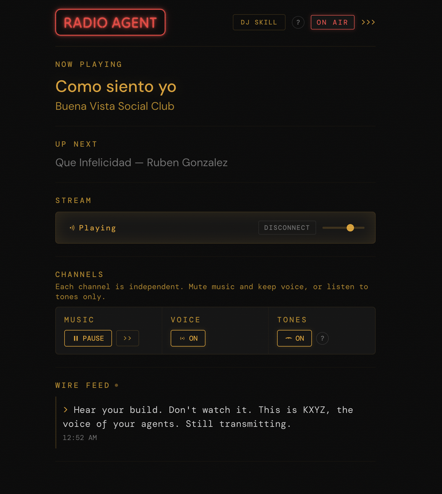

A radio station for your AI coding session. Ambient music, voice announcements, peripheral awareness. Hear your build. Don't watch it.
docker compose up

Agent Radio mixes three independent channels into a single Icecast stream. Each serves a different layer of awareness. Each can be muted independently.
Dashboard at localhost:8001. Stream at localhost:8000/stream. Ships with CC0 ambient music so it plays out of the box.
Agent Radio is the dangling string for AI agent sessions. Music sits in the periphery. You hear it without attending to it. When an agent finishes work, the music ducks and a voice speaks. Information pulls to the center of your attention for five seconds, then returns to the periphery.
After a day of use, you stop noticing the tones. You just know eng1 is busy because the soundscape has texture. When everything goes quiet, the silence tells you nobody is working. No screen needed. No notification badge. Just the sound of your build.
Everything runs locally on your network. No cloud services, no API keys, no subscriptions. A GPU helps but isn't required.